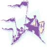

Theme
ASRC

Theme |
ASRC |
|
|
|

It is not difficult to generate school spirit and a sense of unity here at Ricks College. We are at a unique school, during an extra ordinary time, preparing to accomplish sacred and wonderful tasks. President Hinckley has said, “We stand on the summit of the ages, awed by a great and solemn sense of history. This is the last and final dispensation toward which all in the past has pointed. I bear testimony and witness of the reality and truth of these things. I pray that every one of us may sense the awesome wonder of it all.” It is from these words that we have selected our theme, a theme that will unify, teach, and inspire students during this school year. Our 2000 – 2001 theme is “Standing on the summit of ages.” As we understand the doctrines and principles housed within this message from our prophet, we will all better recognize who we are, where we are at, and where we are going. We invite you to read and study this talk. It can be found on page 72 in the 1999 fall General Conference issue of the Ensign. May we all have a wonderful year as we gather around this message from our prophet.|
|
|
|
| Dances | Get Involved | Questions/Comments | |